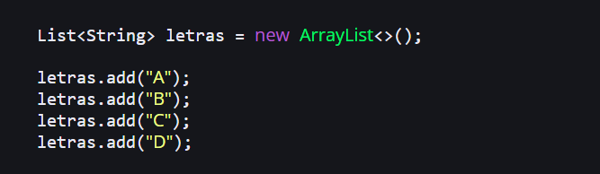
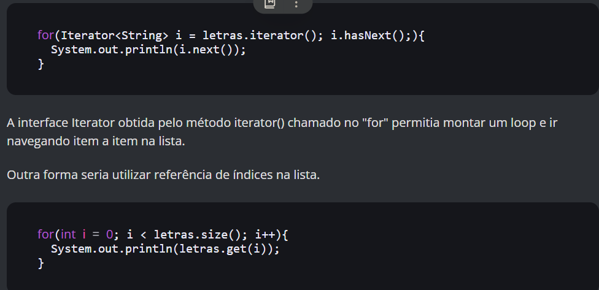
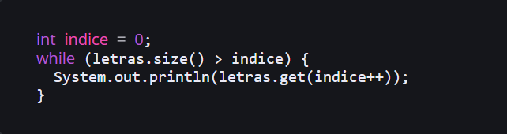
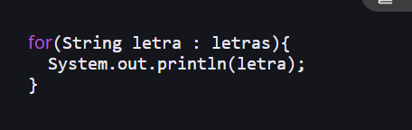
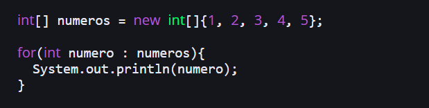
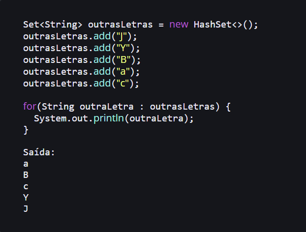

Para que serve o For-Each Loop em Java ?
O for-each é uma estrutura de iteração para navegar pelos elementos
de uma coleção (ou seja, pode ser listas, mapas e conjuntos) ou array
de forma mais fácil e sintaticamente mais simples. Antes de apresentá-lo,
vamos entender um pouco de como eram feitas iterações anteriormente para
compreender um pouco das evoluções do Java e ter uma visão abrangente da
Vamos inicialmente usar como exemplo uma lista de letras do alfabeto criando um
ArrayList.

Era "pré For-Each"
Algum tempo atrás, especificamente na versão 4, em Java não era possível iterar uma coleção
com tanta facilidade como atualmente. Era necessário utilizar a interface Iterator para ir navegando nos elementos.

Estrutura "while".

Dessa forma, enquanto o tamanho da lista for maior que o índice a execução acontecerá.
Também temos o mesmo resultado das alternativas anteriores :)
For-Each Loop lançado
Com o lançamento da versão 5 do Java, o For-Each Loop facilitou muito essa operação deixando de ser necessário utilizar Iterator, while ou até loop com índices.

Como você pode ver, é mais simples e legível e menos verboso. Pode-se ler a estrutura até com maior facilidade, por exemplo: "para cada letra em letras, imprima no console".
Também é possível usar For-Each com arrays.
Estrutura Set também usa Forech
